Testbericht 21 – hull/minkowski, STL-Import, Kollisions-Asserts, Nutzer-Feedback, Umbenennung in mcad
1 Umfang
| Phase | Commit | Titel |
|---|---|---|
| A | 83ee5b3 | Kernel: Offset nach außen (Minkowski-Summe mit Kugel), exakt oder Fehler |
| A | 71e5bce | Kernel-Geometrie: exakte 2D-Hülle aus Geraden und Bögen, konvexe Hülle im Raum |
| A | b97c365 | hull() und minkowski(): exakte Sonderfälle in 2D und 3D, sonst Warnung mit Grund |
| A | a70dc9a | minkowski() mit einem Kind ist das Kind, leere hull()/minkowski() ohne Warnung |
| B | b2b9768 | Kernel: Dreiecksnetze ohne B-Rep, STL-Parser und Netzaufbereitung (cad-stl) |
| B | 8847eb2 | Konvexe Hülle im Raum: geschlossen auch bei fast koplanaren Punkten |
| B | b6e8906 | import("x.stl"): STL als B-Rep oder als reines Netz (Plan 21, Phase B) |
| B | f017264 | UI: STL als Datendatei (Upload, Beispiele, Verweise im Text) |
| Editor | 2d3451e | Editor: keine Inline-Schieberegler mehr für Zahl-Literale |
| C | c585002 | Kollisions-Asserts: assert_keepout/disjoint/intersect/touches, cad export bricht ab (Plan 21, Phase C) |
| C | 0e20aad | UI: Sperrvolumen schraffiert und ausblendbar, Assert-Ergebnisse in der Ansicht, Export-Rückfrage |
| C | bf44805 | Tauri-E2E T19: Sperrvolumen, Verletzung einrahmen, Export-Rückfrage in der Desktop-App |
| C | 235d4af | Asserts: Kontakt-Exaktheit je Kontaktart, CLI zeigt gewollte Schnitte grün |
| D | a86a21b | JSON-Schema 2: selected_edges überall Polylinien, einheitliche Felder in outline |
| D | cbf2963 | -D ohne Modulkontext: Zuweisungen auf oberster Ebene setzen (wie openscad -D) |
| D | 1d530de | -m 'modul(argumente)': Modulkontext mit Argumenten wie im Code |
| D | 91f8ef6 | slot(p1, p2, r): Langloch als exakte 2D-Grundform |
| D | 8ac92d6 | STEP-Export: je Bauteil und Objekt ein benannter Körper, --merge für einen |
| D | 3164682 | Kernel-Fehler mit Ort: tangential berührende Operanden mit Zeile und Stelle |
| E | 4db585b | Umbenennung cad → mcad: Binary, Programmname, Dateiendung .mcad (Version 0.3.0) |
| E | 004d30f | Tauri-E2E: Binary mcad, T20 Fenstertitel, App-ID und .scad-Projekt |
| Bericht | 0ea0d78 | verify.py: überzählige Klammer aus der Umbenennung entfernt |
Entscheidungen des Nutzers für Plan 21: hull/minkowski nur in exakten Sonderfällen, sonst wie bisher eine Warnung mit unveränderten Kindern (keine Näherung); STL-Import mit automatischer Grenze B-Rep/Netz und Override as = "solid" | "mesh"; Asserts: Verletzung = Warnung, mcad export bricht ab (außer --ignore-asserts), assert_keepout in der UI gut sichtbar.
2 Phase A: Offset, hull, minkowski
Kernel-Offset (Spike)
Kernel::offset(s, d, tag) ist die Minkowski-Summe eines Körpers mit einer Kugel: Fassade sc_offset über SmApiOffsetBrepFull (nach außen, Rundung, Selbstschnitt-Behandlung). Der Spike (Stand 83ee5b3, Volumen über die Massen-Eigenschaften gegen die Steiner-Formel) zeigt, wo SMLib exakt ist: an konvexen Kanten entstehen Zylinder, an Ecken Kugeln, solange die Flächen an den Ecken rechtwinklig aufeinandertreffen. Am Tetraeder liegen die Flächen richtig (4 Ebenen, 6 Zylinder, 4 Kugeln mit exakten Mittelpunkten und Radien), die Trimmkurven aber bis 0,33 mm neben den Kanten (Volumen +4,5·10⁻⁴ gegen Steiner); am 45°-Keil scheitert SMLib. Die Fassade prüft deshalb den Abstand des Ergebnisrands zum Körper (je Kante 9 Punkte, Flächenmitte) und die Trimmkurven gegen die 3D-Kanten (10⁻⁶ der Größe) und meldet sonst „offset is not exact“.
| Körper (r = 2) | Rundung ohne Selbstschnitt (mode 0) | Rundung mit Selbstschnitt (mode 2, gewählt) | Ersatz: Flächen-Offset + Verrundung | Flächen (mode 2) |
|---|---|---|---|---|
| Quader 10×20×30 | Fehler (überlappt sich selbst) | ok, +3,0·10⁻⁸, 184 ms | Fehler (nicht exakt: Rand bis 1,46 mm neben dem Abstand) | 12 Zylinder, 6 Ebene, 8 Kugel |
| Quader gedreht | ok, +1,6·10⁻⁸, 108 ms | ok, +2,7·10⁻⁸, 180 ms | Fehler (nicht exakt: Rand bis 1,46 mm neben dem Abstand) | 12 Zylinder, 6 Ebene, 8 Kugel |
| Zylinder r 5, h 10 | ok, +1,7·10⁻⁷, 36 ms | ok, +1,7·10⁻⁷, 59 ms | Fehler (nicht exakt: Rand bis 0,83 mm neben dem Abstand) | 1 Zylinder, 2 Ebene, 2 Rotation |
| Kugel r 5 | ok, −2,8·10⁻⁷, 15 ms | ok, −2,8·10⁻⁷, 20 ms | Fehler (Verrundung scheitert) | 1 Kugel |
| L-Profil (konkave Kante) | Fehler (nicht geschlossen) | ok, −5,3·10⁻⁸, 372 ms | Fehler (nicht exakt: Rand bis 1,46 mm neben dem Abstand) | 17 Zylinder, 8 Ebene, 10 Kugel |
| verrundeter Quader (r 1) | ok, 911 ms | ok, 881 ms | Fehler (Verrundung scheitert) | 12 Zylinder, 6 Ebene, 8 Kugel |
| Tetraeder | Fehler (nicht exakt: Trimmkurven bis 0,33 mm neben den Kanten) | Fehler (nicht exakt: Trimmkurven bis 0,33 mm neben den Kanten) | Fehler (nicht exakt: Rand bis 5,98 mm neben dem Abstand) | – |
| 45°-Keil (Extrusion) | Fehler (überlappt sich selbst) | Fehler (überlappt sich selbst) | Fehler (nicht exakt: Rand bis 3,60 mm neben dem Abstand) | – |
| 45°-Keil (Polyeder) | Fehler (überlappt sich selbst) | Fehler (überlappt sich selbst) | Fehler (nicht exakt: Rand bis 3,60 mm neben dem Abstand) | – |
Spalte „Ersatz“: Flächen-Offset (Flächen verlängert) und danach alle Kanten mit r verrundet – an keinem Körper außer Zylinder und Quader gedreht tragfähig, daher verworfen. Rohdaten reports/tmp/report21/phase-a/offset-spike.txt.
Sprache und Beispiel
hull() und minkowski() wählen den Fall nach den Kindern (Transformationen, Gruppen, Vereinigungen und geschachtelte Hüllen werden durchgesehen, Kugeln/Zylinder/Bögen nur unter Ähnlichkeitsabbildungen). Exakte Sonderfälle:
| Operation | Sonderfall | Ergebnis |
|---|---|---|
hull 2D | jede Region aus Geraden und Kreisbögen (Text, SVG: B-Splines über Biarcs) | Geraden + Bögen über die Stützfunktion, Übergänge an den gemeinsamen Tangenten in geschlossener Form |
minkowski 2D | Profil + Kreis; zwei konvexe Profile (eines ein Polygon) | Offset bzw. konvexe Summe |
hull 3D | ebene Körper; Kugeln/Zylinder/Kegel auf einer Achse; parallele Prismen gleicher Höhe; gleich große Kugeln | Polyeder; Rotationskörper der 2D-Hülle der Halbschnitte; extrudierte 2D-Hülle; Hülle der Mittelpunkte + Offset r |
minkowski 3D | Körper + Kugel; linear_extrude + cylinder (parallele Prismen); zwei konvexe ebene Körper; ein Kind | Offset; Prisma der 2D-Summe; Polyeder; das Kind |
| sonst | z. B. Kugeln verschiedener Radien nicht auf einer Achse, Tetraeder + Kugel, Torus, $fillet-Primitive | Warnung „hull: <Grund>; Kinder werden unverändert gezeigt“ |
module langloch(l = 20, d = 6) {
hull() {
circle(d = d);
translate([l, 0]) circle(d = d);
}
}
module platte(w = 60, t = 30, h = 4, r = 5) {
difference() {
linear_extrude(h) hull() {
for (x = [0, w], y = [0, t]) translate([x, y]) circle(r);
}
for (y = [t / 4, 3 * t / 4]) translate([w / 4, y, -1]) linear_extrude(h + 2) langloch(w / 2, 5);
}
}
platte();
translate([0, 50, 0]) minkowski() {
cube([20, 20, 10]);
sphere(2);
}
translate([40, 52, 0]) hull() {
translate([0, 0, 3]) sphere(3);
translate([0, 0, 25]) sphere(3);
}
translate([60, 52, 0]) hull() {
translate([-5, -10, 0]) cube([5, 20, 4]);
translate([12, 0, 0]) cylinder(r = 6, h = 4);
}
translate([0, 90, 2]) hull() {
for (x = [0, 30], y = [0, 15], z = [0, 4]) translate([x, y, z]) sphere(2);
}
translate([50, 90, 0]) minkowski() {
linear_extrude(3) polygon([[0, 0], [20, 0], [20, 4], [4, 4], [4, 15], [0, 15]]);
cylinder(r = 1, h = 1);
}$ mcad check examples/spec/hull_minkowski.mcad examples/spec/hull_minkowski.mcad: 0 Fehler, 0 Warnungen (Exit 0)
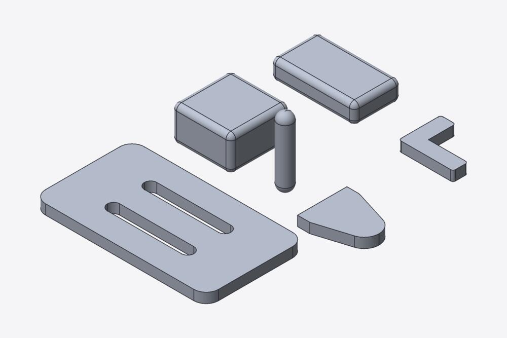
examples/spec/hull_minkowski.mcad, mcad render (iso): Platte als 2D-Hülle von vier Kreisen mit Langlöchern, abgerundeter Block (Würfel ⊕ Kugel), Griff als Kapsel, Lasche (Quader + Zylinder gleicher Höhe), Kissen aus acht gleich großen Kugeln, Leiste aus linear_extrude ⊕ cylinderMesswerte gegen Formel
Volumen über mcad measure --volume (exakte B-Rep, Massen-Eigenschaften des Kernels); 2D-Fälle um 1 extrudiert, das Volumen ist die Fläche. Zeit = ganzer CLI-Aufruf ohne Daemon (Parsen, Auswertung, Kernel, Volumen), Median aus 3 Läufen.
| Fall | Operation | Formel | Soll | gemessen | rel. Abw. | Aufruf | Sonderfall bzw. Warnung |
|---|---|---|---|---|---|---|---|
| Stadion r 3, L 10 | hull | πr² + 2rL | 88,2743 | 88,2743 | +9,6·10⁻⁹ | 66 ms | |
| Kreise r 5 und r 2, Abstand 12 | hull | Riemenfläche | 132,1920 | 132,1920 | +7,2·10⁻⁹ | 71 ms | |
| Quadrat 10 + Kreis r 5 auf der Kante | hull | 100 + 12,5π | 139,2699 | 139,2699 | +6,7·10⁻⁹ | 63 ms | |
| 4 Kreise r 2 auf Rechteck 20×10 | hull | 24·14 − (4 − π)·4 | 332,5664 | 332,5664 | +3,9·10⁻⁹ | 64 ms | |
| Hülle der Glyphe „G“ (size 20) | hull | – | – | 226,0389 | – | 67 ms | |
| Rechteck 10×20 ⊕ Kreis r 2 | minkowski | A + Pr + πr² | 332,5664 | 332,5664 | +3,9·10⁻⁹ | 63 ms | |
| L-Profil ⊕ Kreis r 2 (konkave Ecke) | minkowski | A + Pr + (5π/4 − 1)r² | 346,7080 | 346,7080 | +4,8·10⁻⁹ | 70 ms | |
| Quadrat 10 ⊕ Dreieck 4×3 | minkowski | 176 | 176,0000 | 176,0000 | −1,6·10⁻¹⁶ | 46 ms | |
| Kapsel r 3, L 10 | hull | πr²L + 4/3πr³ | 395,8407 | 395,8410 | +7,9·10⁻⁷ | 123 ms | Rotationskörper |
| Kapsel gedreht [30, 40, 0] | hull | πr²L + 4/3πr³ | 395,8407 | 395,8411 | +1,2·10⁻⁶ | 131 ms | Rotationskörper |
| Kugeln r 5 und r 2, Abstand 10 | hull | Kappe + Kegelstumpf + Kappe | 723,7182 | 723,7181 | −1,5·10⁻⁷ | 146 ms | Rotationskörper |
| Zylinder r 3 h 10 + Kugel r 3 oben | hull | πr²h + 2/3πr³ | 339,2920 | 339,2921 | +4,1·10⁻⁷ | 100 ms | Rotationskörper |
| zwei Würfel 10 im Abstand 20 | hull | 30·10·10 | 3.000,0000 | 3.000,0000 | −3,0·10⁻¹⁶ | 53 ms | Polyeder (6 Flächen) |
| Würfel 10 + „Punkt“ 5 über der Deckfläche | hull | 1000 + 100·5/3 | 1.166,6667 | 1.166,6700 | +2,9·10⁻⁶ | 57 ms | Polyeder (10 Flächen) |
| 3 Zylinder r 3 h 2 | hull | h·(Dreieck + Pr + πr²) | 716,5487 | 716,5487 | +6,5·10⁻⁹ | 75 ms | Prisma |
| Quader 10×10×5 + Zylinder r 5 h 5 | hull | h·(200 + 12,5π) | 1.196,3495 | 1.196,3495 | +4,8·10⁻⁹ | 83 ms | Prisma |
| 8 Kugeln r 2 an den Ecken von 20×10×5 | hull | Quader ⊕ Kugel (Steiner) | 2.873,3333 | 2.873,3334 | +2,4·10⁻⁸ | 442 ms | Hülle der Mittelpunkte + Offset 2 |
| Quader 10×20×30 ⊕ Kugel r 2 | minkowski | Steiner | 11.187,4926 | 11.187,4929 | +3,0·10⁻⁸ | 278 ms | Offset 2 |
| gedrehter Quader ⊕ Kugel r 2 | minkowski | Steiner | 11.187,4926 | 11.187,4929 | +2,6·10⁻⁸ | 304 ms | Offset 2 |
| Prisma 10×20×5 ⊕ Zylinder r 2 h 1 | minkowski | 6·(A + Pr + πr²) | 1.995,3982 | 1.995,3982 | +3,9·10⁻⁹ | 79 ms | Prisma |
| Würfel 10 ⊕ Quader 1×2×3 | minkowski | 11·12·13 | 1.716,0000 | 1.716,0000 | −2,7·10⁻¹⁶ | 52 ms | Prisma |
| Tetraeder ⊕ Kugel r 1 | minkowski | – | – | 170,3319 | – | 331 ms | Warnung: Offset 1: offset is not exact: trim curves up to 0.166954 mm off their edges (SMLib approximates the rounding at corners whose faces do not meet at right angles); Kinder werden unverändert gezeigt |
| 3 Kugeln r 3/2/1 nicht auf einer Achse | hull | – | – | 150,7968 | – | 262 ms | Warnung: Kugeln mit verschiedenen Radien nicht auf einer Achse; Kinder werden unverändert gezeigt |
| 4 gleiche Kugeln r 2 in einer Ebene | hull | – | – | 134,0418 | – | 327 ms | Warnung: gleich große Kugeln mit Mittelpunkten in einer Ebene; Kinder werden unverändert gezeigt |
Abweichungen: 2D-Hüllen und Prismen ≤ 10⁻⁸ (Integration); Rotationskörper (Kapsel, Kugeln, Kuppel) 10⁻⁷–10⁻⁶ – Genauigkeit der Volumenintegration von Rotationsflächen, die Geometrie selbst ist exakt (STEP: SURFACE_OF_REVOLUTION, keine B-Splines); Würfel + „Punkt“: der Punkt ist ein Würfel mit 10⁻⁴ Kantenlänge (+2,9·10⁻⁶ ist dessen Beitrag).
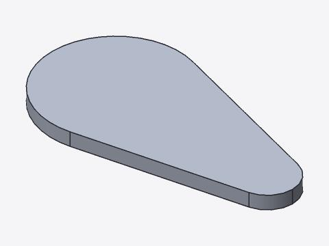
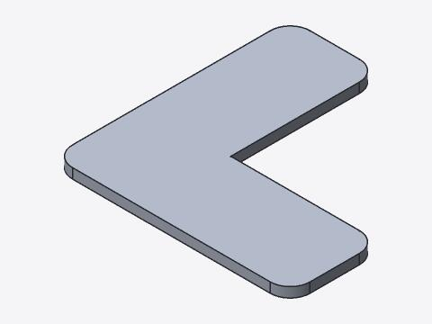
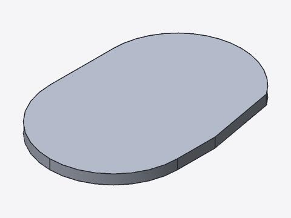
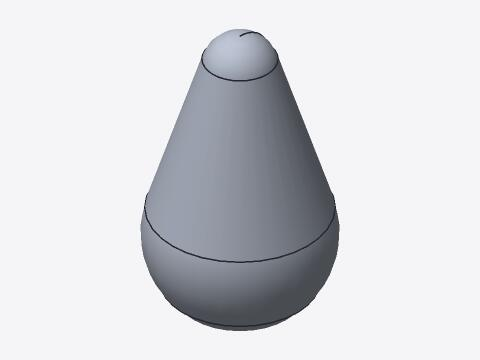
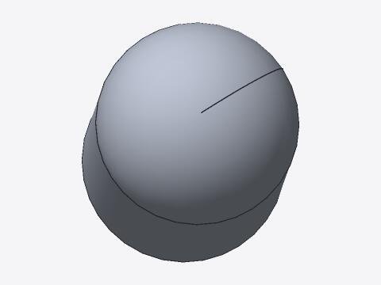
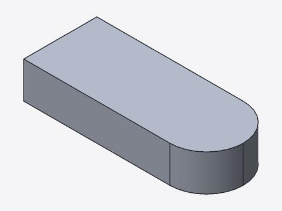
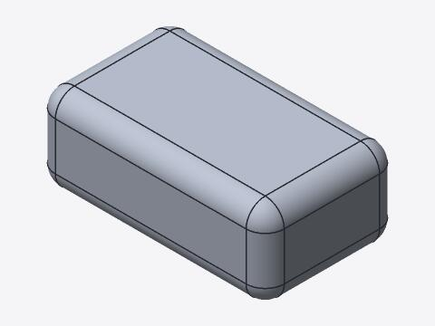
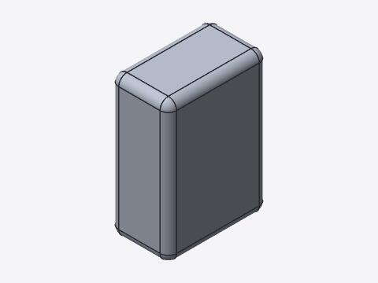
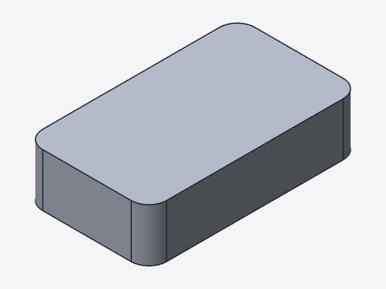
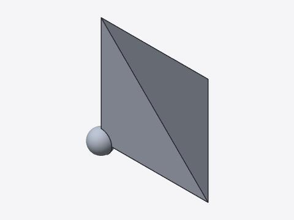
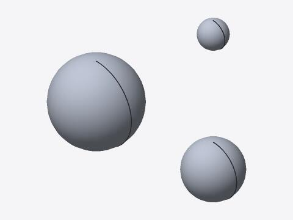
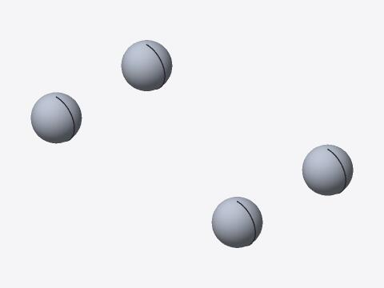
Grenzen
- Offset (und damit
minkowskimit Kugel) nur an Körpern, deren Flächen sich an den Ecken rechtwinklig treffen; Tetraeder, Keile, schräge Polyeder → Warnung, Kinder unverändert. - Gleich große Kugeln mit Mittelpunkten in einer Ebene (abgerundete Platte) sind kein Sonderfall (die Hülle der Mittelpunkte ist flach, ein Offset davon geht nicht) – Fall „4 gleiche Kugeln in einer Ebene“ oben; Umweg:
linear_extrudeeiner 2D-Hülle mit$fillet. rotate_extrude-Kinder, Torus und$fillet-Primitive inhull: Warnung.
3 Phase B: import("x.stl")
Sprache und Modi
import("../stl/winkel.stl"); // geschlossen, ≤ 500 Flächen: B-Rep (Booleans gehen)
import("platine.stl", as = "mesh"); // reines Netz (Anzeige, Export, Messen)
import("teil.stl", center = true, scale = 25.4); // Zoll → mm, Hülle um den Ursprung
| Modus | automatisch, wenn | geht | geht nicht |
|---|---|---|---|
B-Rep (solid) | geschlossen, mannigfaltig, ≤ 500 Flächen nach dem Zusammenfassen | alles: Booleans, fillet/$fillet, exaktes Messen, STEP | – |
Netz (mesh) | > 500 Flächen, offen, nicht mannigfaltig | Anzeige, Transformationen, color, Bauteile, hull (≤ 2000 Ecken), STL/3MF, STEP facettiert, Hülle/Volumen/Fläche/Schnitt, --clearance, --interference (ja/nein) | Booleans, fillet/chamfer/shell, minkowski, thicken – Fehler bzw. Warnung mit Hinweis as = "solid" |
Aufbereitung in jedem Modus (cad-stl): Ecken verschweißen (10⁻⁶ der Diagonale), NaN-, entartete und doppelte Dreiecke verwerfen, Orientierung einheitlich nach außen, koplanare Nachbarn zu ebenen Flächen zusammenfassen, Ecken auf die Ebenen ihrer Flächen ziehen. ASCII und binär (binär an der Größe 84 + 50·n erkannt, auch mit „solid“-Kopf).
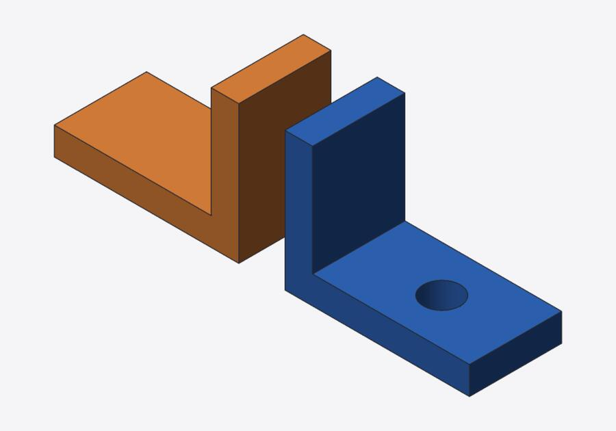
examples/spec/stl_import.mcad: derselbe Winkel als B-Rep mit Bohrung (blau) und gespiegelt als Netz (orange)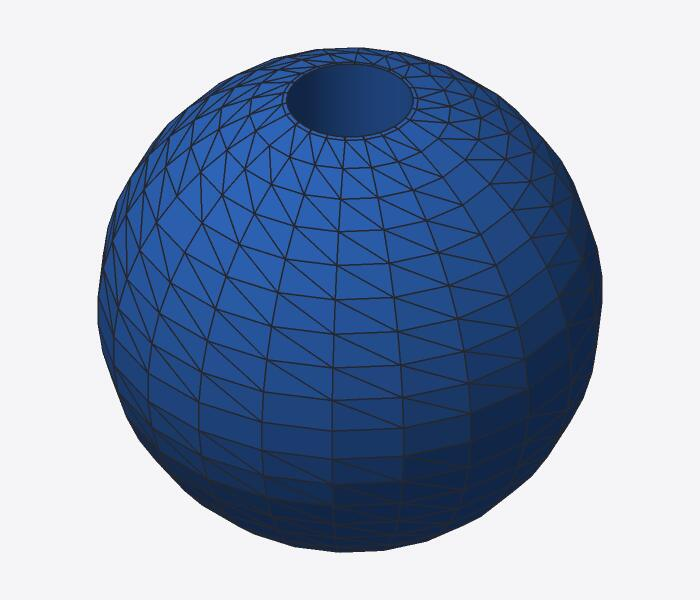
as = "solid" minus Zylinder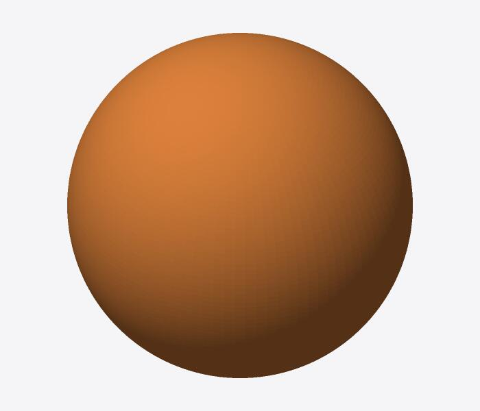
$ mcad inspect stl_import.mcad --line 8
Z.8: import("winkel.stl");
Hinweis: B-Rep: 8 Flächen aus 20 Dreiecken
$ mcad inspect stl_import.mcad --line 13
Z.13: translate([-5, 0, 0]) mirror([1, 0, 0]) color("orange") import("winkel.stl", as = "mesh");
Hinweis: Netz: 20 Dreiecke, 8 Flächen
Laufzeit und Grenze 500 Flächen
as = "solid"), derselbe Körper mit einem Boolean (Zylinder durch beide Pole) und als Netz (Parsen, Aufbereiten und Kernel zusammen). Über 5000 Dreiecken nur als Netz gemessen. Werte in der Tabelle darunter („Sprache“ = Parsen und Aufbereiten des STL, „Anzeige“ = Anzeige-Netz und Bild).| Dreiecke | Flächen | automatisch | Sprache | B-Rep-Aufbau | B-Rep + Boolean | Netz: Kernel / Boolean | Anzeige + Bild |
|---|---|---|---|---|---|---|---|
| 242 | 215 | B-Rep | 1 ms | 0,10 s | 0,5 s | 0 / 8 ms | 128 ms |
| 480 | 445 | B-Rep | 1 ms | 0,21 s | 1,1 s | 0 / 8 ms | 135 ms |
| 722 | 654 | Netz | 3 ms | 0,38 s | 5,8 s | 0 / 8 ms | 178 ms |
| 968 | 890 | Netz | 3 ms | 0,65 s | 2,8 s | 0 / 8 ms | 147 ms |
| 1.458 | 1.362 | Netz | 4 ms | 0,70 s | 5,8 s | 0 / 7 ms | 136 ms |
| 1.984 | 1.807 | Netz | 5 ms | 1,04 s | 9,5 s | 0 / 8 ms | 140 ms |
| 2.964 | 2.757 | Netz | 8 ms | 1,96 s | 28,0 s | 0 / 9 ms | 151 ms |
| 5.000 | 4.646 | Netz | 15 ms | 4,83 s | 86,2 s | 0 / 8 ms | 161 ms |
| 9.940 | 9.177 | Netz | 33 ms | – | – | 0 / 8 ms | 202 ms |
| 20.000 | 18.556 | Netz | 62 ms | – | – | 0 / 9 ms | 198 ms |
Modell (mcad-Export, wieder importiert mit as = "solid") | Dreiecke | Flächen | automatisch | B-Rep-Aufbau | + Boolean (Zylinder r 6) |
|---|---|---|---|---|---|
| Platte 60×40×5 mit 8 Bohrungen | 2.092 | 533 | Netz | 0,47 s | 1,05 s |
Gehäuse aus box.mcad mit Verrundung | 740 | 582 | Netz | 0,46 s | 0,75 s |
Bis 500 Flächen bleibt Import + ein Boolean bei 1,3 s (445 Flächen). Darüber wächst die Zeit des Booleans überlinear (890 Flächen 2,8 s, 4.646 Flächen 86 s); die Zeiten streuen zwischen benachbarten Größen, weil die Zahl der Schnittkanten an den Polen von der Teilung der Kugel abhängt. Als Netz kostet der Kernel nichts; Parsen und Aufbereiten von 20.000 Dreiecken 62 ms, Anzeige-Netz und Bild ≈ 0,2 s unabhängig von der Größe. Realistische Exporte liegen knapp über der Grenze (mehr Flächen als eine Kugel gleicher Dreieckszahl wegen der Bohrungen) und werden automatisch Netz; mit as = "solid" brauchen Aufbau und ein Boolean 1–1,5 s.
Kombiniertes Modell: Gehäuse aus STL, Platine als Netz
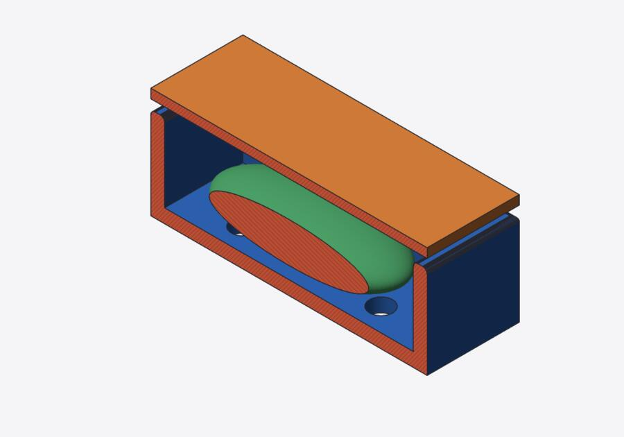
--section-flip): Gehäuse (STL als B-Rep, zwei Bohrungen), „Platine“ (Kugel mit 20 000 Dreiecken, skaliert, als Netz) und Deckel; Kappen auch am Netz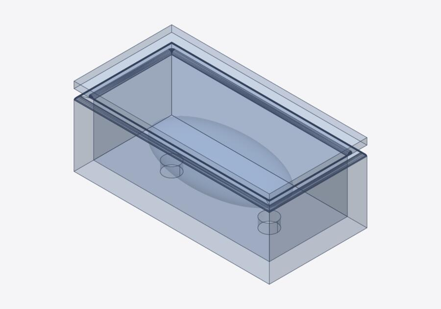
$ mcad measure kombi.mcad --volume --interference --clearance platine gehaeuse kombi.mcad:7:57: Warnung (Auswertung): ungleichmäßige Skalierung verzerrt Verrundungen, Zylinder und Wandstärken; besser Modulparameter Volumen all: 21561.7917 mm³ Keine Kollisionen (3 Bauteile, 1 Paare mit überlappender Hülle geprüft, Toleranz 0.001 mm³) Abstand platine ↔ gehaeuse: 2 mm (± 0.02 mm, Tessellierung 0.01 mm), zwischen [30, 15, 5] und [30, 15, 3] (Exit 0)
Grenzen
- Kollisionen mit Netzen nur ja/nein (Durchdringung oder Enthaltensein), ohne Schnittvolumen; Abstände über die Dreiecke.
- STEP eines Netzes ist facettiert (eine Ebene je Fläche); Booleans und Verrundungen brauchen
as = "solid"und sind ab einigen tausend Flächen langsam (Kurve oben).
4 Editor: keine Inline-Schieberegler für Zahlen
Commit 2d3451e: der Schieberegler am Zeilenende von Zahl-Zuweisungen störte beim Lesen und Schreiben und ist entfernt. Bool-Literale behalten ihren Schalter; Zahlen ändern sich weiter über die Parameterleiste und die Griffe. Playwright B12 prüft, dass kein inline-slider mehr erscheint.
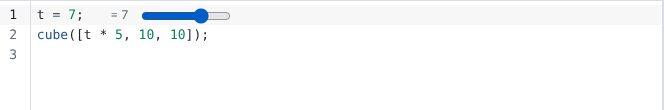
t = 7; mit Schieberegler am Zeilenende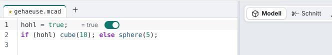
hohl = true;5 Phase C: Kollisions-Asserts
Sprache
w = 60; // Gehäuse außen
d = 40;
h = 25;
t = 2; // Wand
luft = 1; // Mindestabstand zum Bauteil
module gehaeuse() difference() {
cube([w, d, h]);
translate([t, t, t]) cube([w - 2 * t, d - 2 * t, h]);
}
module deckel() translate([0, 0, h]) cube([w, d, t]);
module halter() translate([t - 1, d / 2 - 5, t - 1]) cube([10, 10, 12]);
module kabelfuehrung() translate([w - t - 6, d / 2 - 4, t - 1]) cube([7, 8, 6]);
assert_touches() { // Deckel liegt flächig auf dem Gehäuse
assert_intersect() { // Halter und Kabelführung sind mit dem Gehäuse verbunden
g: gehaeuse();
assert_disjoint() { // Halter und Kabelführung berühren sich nicht
hl: halter();
kf: kabelfuehrung();
}
}
k: deckel();
}
assert_keepout(clearance = luft) translate([25, 12, t + 2]) import("../stl/winkel.stl", as = "mesh");| Assert | Verletzung (Warnung) |
|---|---|
assert_keepout(clearance = 0) | ein echter Körper schneidet das Sperrvolumen (Volumen > ε) oder ist näher als clearance; das Sperrvolumen wird gezeigt, aber nicht exportiert, gezählt oder verrechnet |
assert_disjoint() | ein Paar der Kinder schneidet sich |
assert_intersect() | die Kinder bilden keine zusammenhängende Gruppe sich schneidender Körper (Berühren ist kein Schnitt) |
assert_touches(tol, contact) | Spalt > tol, Überschneidung, oder nur Linien-/Punktkontakt bei contact = "face" |
Asserts sind Gruppen ihrer Kinder und lassen sich schachteln. Schnitte exakt per Boolean je Körperpaar (Volumen aus den Massen-Eigenschaften), Kontaktflächen exakt über region2 für Geraden und Bögen, Abstände über die Tessellierung mit Fußpunkten; Paare im Engine-Cache unter Inhaltsschlüsseln.
Testfälle gegen Formel
mcad check --json je Fall (eigener Prozess, kalter Cache, Median aus 3 Läufen). „Prüfung“ = Zeit der Assert-Prüfung, „Aufruf“ = ganzer CLI-Aufruf.
| Fall | Aufbau | erwartet | Ergebnis | Wert | Soll | rel. Abw. | Prüfung | Aufruf |
|---|---|---|---|---|---|---|---|---|
| K1 | keepout: Quader ragt in die Platte | Schnitt | Schnitt | 100,0000 mm³ | 10·10·1 = 100,0000 | +1,4·10⁻¹⁶ | 8,1 ms | 77 ms |
| K2 | keepout: clearance 0,5, Abstand 0,3 | zu nah | zu nah | 0,3000000 mm | 3,3 − 3 = 0,3000 | −1,6·10⁻⁷ | 2,3 ms | 72 ms |
| K3 | keepout: clearance 0,5, Abstand 1 | ok | ok | – | Abstand 1 > 0,5 | – | 0,0 ms | 56 ms |
| K4 | keepout: Berühren bei clearance 0 | ok | ok | – | Abstand 0 | – | 5,1 ms | 68 ms |
| K5 | keepout: Kugel r 2 halb in der Platte | Schnitt | Schnitt | 16,7551 mm³ | 2/3·π·r³ = 16,7552 | −8,0·10⁻⁷ | 238,8 ms | 313 ms |
| K6 | keepout: STL als Netz in der Platte | Schnitt | Schnitt | – | Netz: nur ja/nein | – | 2,9 ms | 57 ms |
| K7 | keepout: zwei Bauteile, nur b im Sperrvolumen | Schnitt | Schnitt | 125,0000 mm³ | 5·5·5 = 125,0000 | −2,3·10⁻¹⁶ | 8,0 ms | 60 ms |
| D1 | disjoint: überlappend | Schnitt | Schnitt | 200,0000 mm³ | 2·10·10 = 200,0000 | −1,4·10⁻¹⁶ | 10,7 ms | 74 ms |
| D2 | disjoint: berührend | ok | ok | – | Berühren erlaubt | – | 5,7 ms | 59 ms |
| D3 | disjoint: Zylinder halb im Quader | Schnitt | Schnitt | 62,8319 mm³ | π·r²·h/2 = 62,8319 | −2,8·10⁻⁹ | 44,5 ms | 137 ms |
| I1 | intersect: Kette a–b–c | ok | ok | – | zusammenhängend | – | 22,8 ms | 95 ms |
| I2 | intersect: viertes Kind 14 mm entfernt | getrennt | getrennt | 14,0000 mm | 40 − 26 = 14,0000 | 0 | 27,3 ms | 97 ms |
| I3 | intersect: nur berührend | getrennt | getrennt | 0,0000000 mm | Berühren ≠ Schnitt = 0,0000 | – | 8,2 ms | 72 ms |
| T1 | touches: Fläche 5×5 | ok | ok (Fläche, exakt) | 25,0000 mm² | 5·5 = 25,0000 | 0 | 10,7 ms | 71 ms |
| T2 | touches: Zylinder r 3 auf Fläche | ok | ok (Fläche, exakt) | 28,2743 mm² | π·r² = 28,2743 | −1,3·10⁻¹⁶ | 34,9 ms | 115 ms |
| T3 | touches: Deckel auf Gehäuserand | ok | ok (Fläche, exakt) | 384,0000 mm² | 60·40 − 56·36 = 384,0000 | 0 | 17,4 ms | 89 ms |
| T4 | touches: liegender Zylinder (Linie) | nur Linienkontakt | nur Linienkontakt | – | Linienkontakt | – | 23,9 ms | 89 ms |
| T5 | touches: dasselbe, contact = "any" | ok | ok (Linie, exakt) | – | Linie erlaubt | – | 24,6 ms | 120 ms |
| T6 | touches: Kugel auf Platte (Punkt) | nur Punktkontakt | nur Punktkontakt | – | Punktkontakt | – | 176,4 ms | 250 ms |
| T7 | touches: Spalt 0,2 | Spalt | Spalt | 0,1999998 mm | 10,2 − 10 = 0,2000 | −9,5·10⁻⁷ | 1,6 ms | 57 ms |
| T8 | touches: Spalt 0,2 bei tol 0,3 | ok | ok (Fläche, exakt) | – | innerhalb tol | – | 3,6 ms | 53 ms |
| T9 | touches: Überschneidung 1 mm | Schnitt | Schnitt | 100,0000 mm³ | 1·10·10 = 100,0000 | +1,4·10⁻¹⁶ | 11,4 ms | 68 ms |
| T10 | touches: Quader Kante an Kante | nur Linienkontakt | nur Linienkontakt | – | Kante an Kante | – | 6,2 ms | 59 ms |
Abstände (K2, T7) kommen aus der f32-Tessellierung und weichen um ≈ 10⁻⁷ relativ ab; Volumen und Kontaktflächen sind exakt. Die Kugel (K5, T6) kostet ≈ 0,2 s für den Boolean mit der Kugelfläche.
Export, CLI-Bilder
$ mcad check asserts.mcad Asserts: 4 von 4 geprüft, 0 verletzt asserts.mcad: 0 Fehler, 0 Warnungen (Exit 0) $ mcad check asserts_bad.mcad asserts_bad.mcad:21:1: Warnung (Kernel): assert_touches: g + hl + kf und k überschneiden sich (Schnittvolumen 100 mm³) asserts_bad.mcad:33:1: Warnung (Kernel): assert_keepout: g hält den Abstand 3 mm zum Sperrvolumen nicht ein: 2 mm (± 0.0305) von [42.4444, 12, 2] bis [42.4444, 12, 4] [Zeile 14: box (Instanz g: gehaeuse)] Asserts: 4 von 4 geprüft, 2 verletzt (2 Verletzung(en); mcad export bricht dann ab, außer mit --ignore-asserts) asserts_bad.mcad: 0 Fehler, 2 Warnungen (Exit 0) $ mcad export asserts_bad.mcad -o x.stl asserts_bad.mcad:21:1: Warnung (Kernel): assert_touches: g + hl + kf und k überschneiden sich (Schnittvolumen 100 mm³) asserts_bad.mcad:33:1: Warnung (Kernel): assert_keepout: g hält den Abstand 3 mm zum Sperrvolumen nicht ein: 2 mm (± 0.0305) von [42.4444, 12, 2] bis [42.4444, 12, 4] [Zeile 14: box (Instanz g: gehaeuse)] Export abgebrochen: 2 Assert-Verletzung(en), nichts geschrieben: Z.21 assert_touches: g + hl + kf und k überschneiden sich (Schnittvolumen 100 mm³) Z.33 assert_keepout: g hält den Abstand 3 mm zum Sperrvolumen nicht ein: 2 mm (± 0.0305) von [42.4444, 12, 2] bis [42.4444, 12, 4] Trotzdem exportieren: --ignore-asserts (Exit 4) $ mcad export asserts_bad.mcad -o x.stl --ignore-asserts asserts_bad.mcad:21:1: Warnung (Kernel): assert_touches: g + hl + kf und k überschneiden sich (Schnittvolumen 100 mm³) asserts_bad.mcad:33:1: Warnung (Kernel): assert_keepout: g hält den Abstand 3 mm zum Sperrvolumen nicht ein: 2 mm (± 0.0305) von [42.4444, 12, 2] bis [42.4444, 12, 4] [Zeile 14: box (Instanz g: gehaeuse)] Warnung: trotz 2 Assert-Verletzung(en) exportiert (--ignore-asserts) x.stl: 56 Dreiecke, 2884 Bytes, Volumen 20742 mm³ (Exit 0)
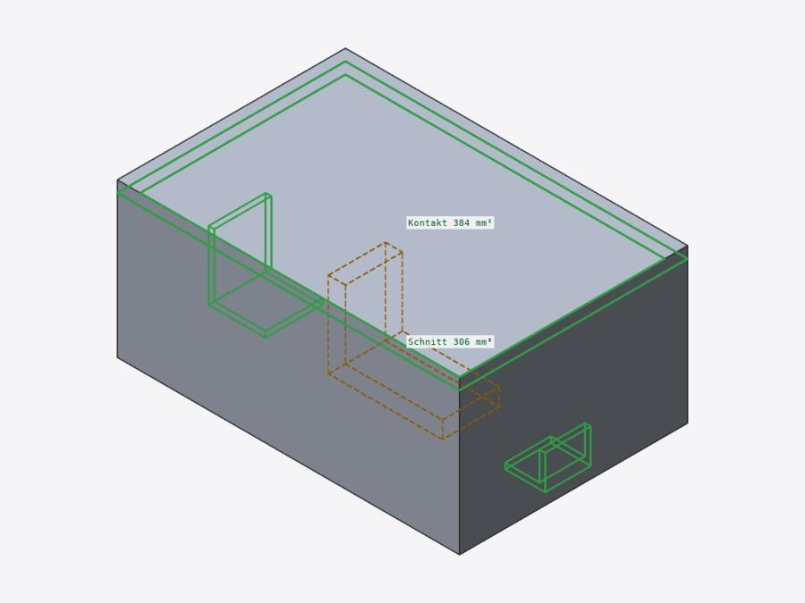
mcad render asserts.mcad --show asserts: Kontakt Deckel/Gehäuse 384 mm² grün, gewollter Schnitt Halter/Kabelführung grün, Sperrvolumen gelb gestrichelt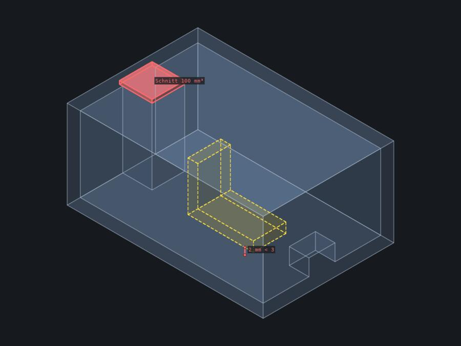
luft = 3, Halter zu hoch), --xray --theme dark: Schnitt rot, Abstand „2 mm < 3“ als Linie mit Fußpunkten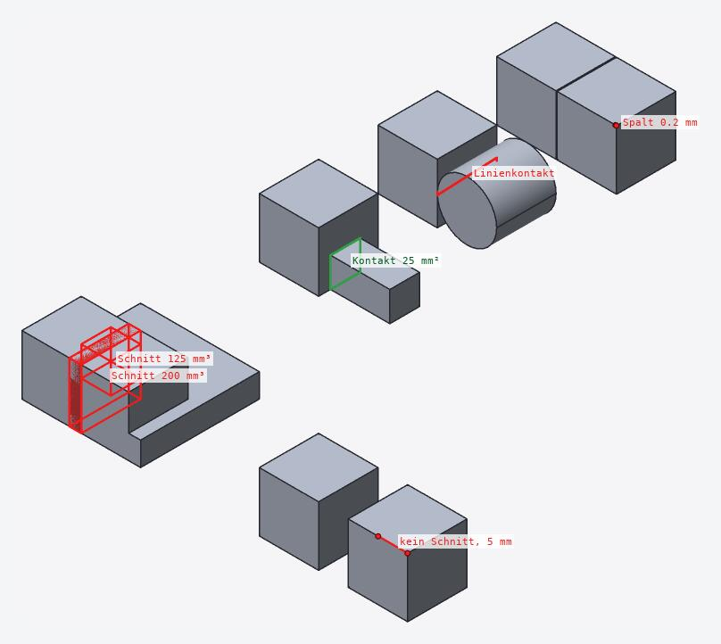
faelle.mcad --show asserts: alle Arten nebeneinander – Keepout (Schnitt), disjoint (Schnitt 200 mm³), intersect (getrennt), Flächenkontakt 25 mm², Linienkontakt, Spalt 0,2 mmUI (Browser, Wasm-Kernel)
Sperrvolumen gelb schraffiert und durch das Modell sichtbar, nicht wählbar oder messbar, Schalter „Sperrvolumen“ (gemerkt); Schnittkörper einer Verletzung rot, Kontakt grün, Spalt als Maßlinie; Statusleiste „n Assert-Verletzungen“, ein Klick darauf oder auf die Warnung am Zeilenende rahmt die Verletzung ein; jeder Export fragt bei Verletzung nach. Bilder aus dem finalen Playwright-Lauf (C01–C05).
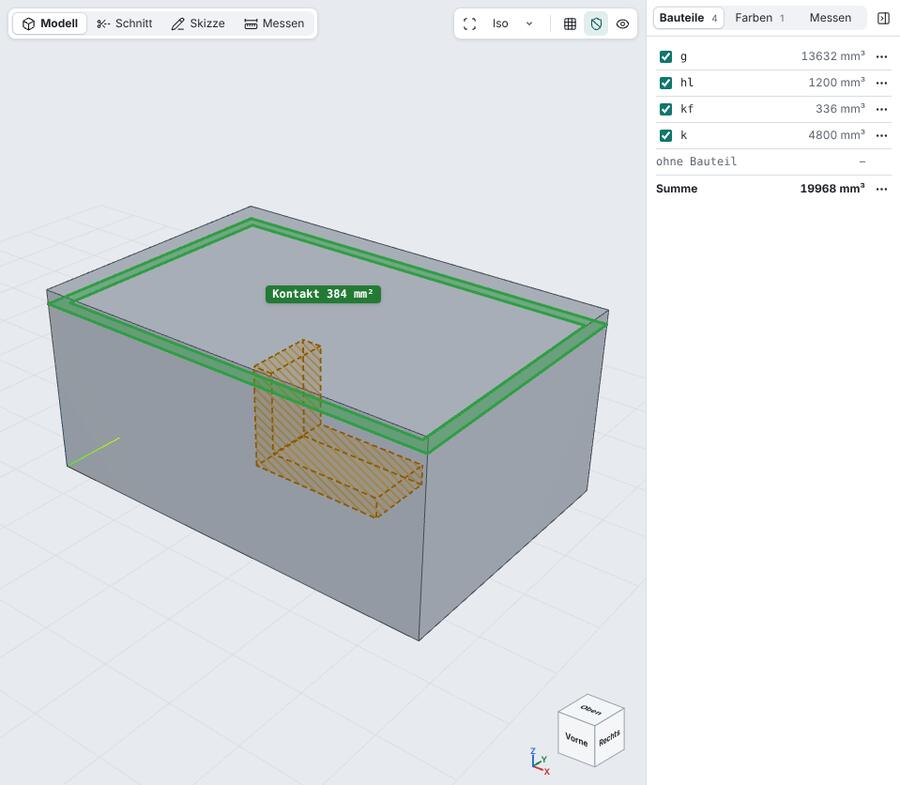
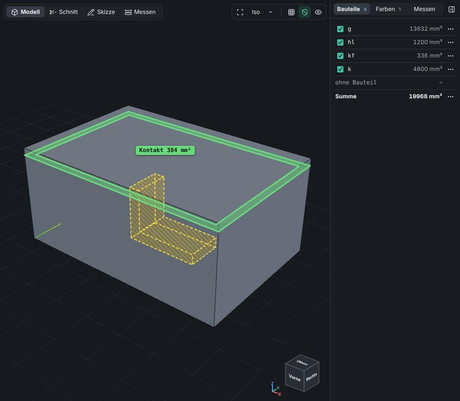
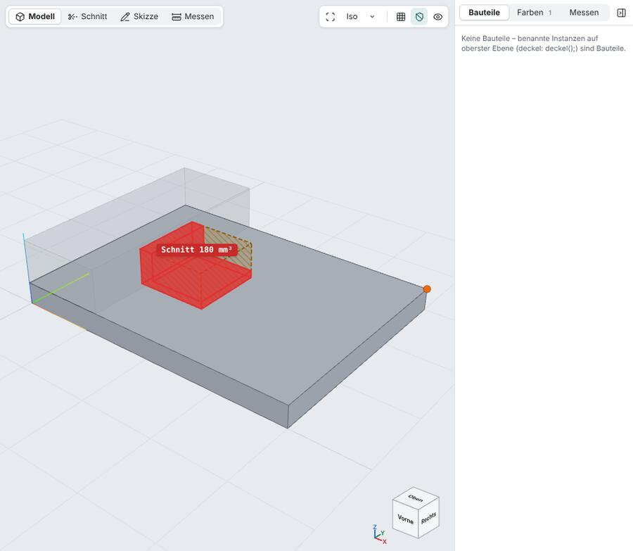
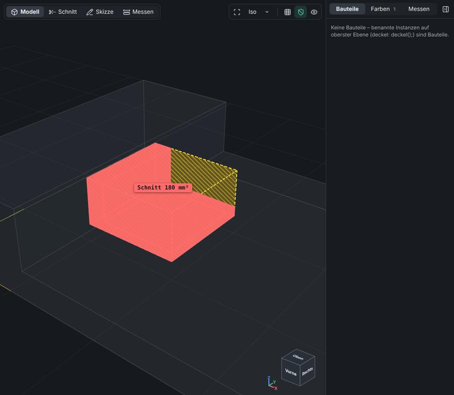
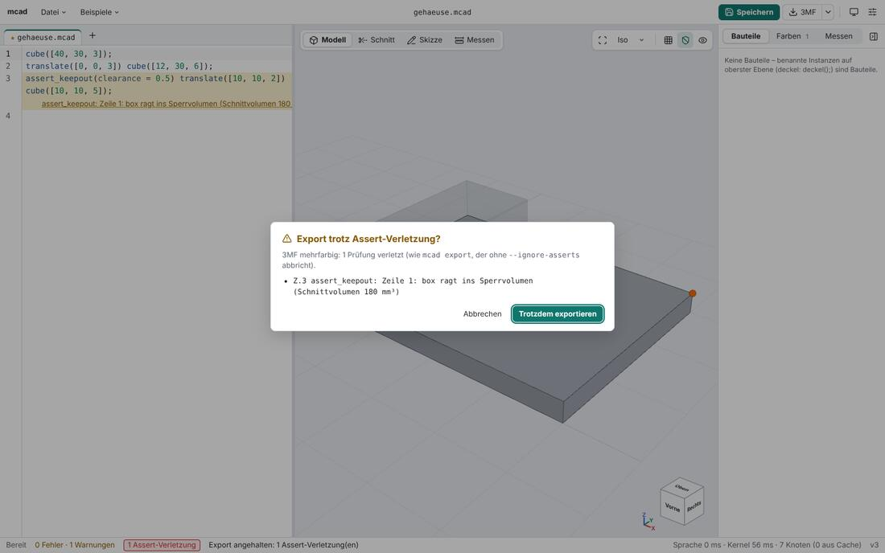
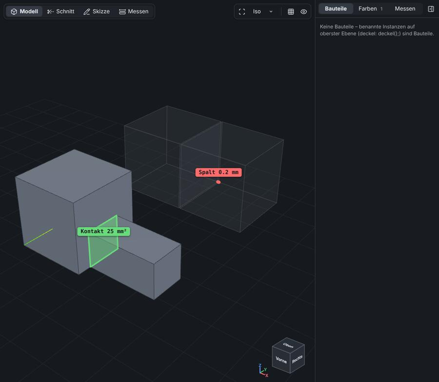
Desktop-App (Tauri T19)
T19 bestanden (1,5 s): Schnittvolumen 180 mm³ (10·10·1 + 2·10·4 = 180); Sperrvolumen gezeichnet; Schnittkörper rot gezeichnet; Verletzung fokussiert; Rückfrage: Z.3 assert_keepout: Zeile 1: box ragt ins Sperrvolumen (Schnittvolumen 180 mm³).
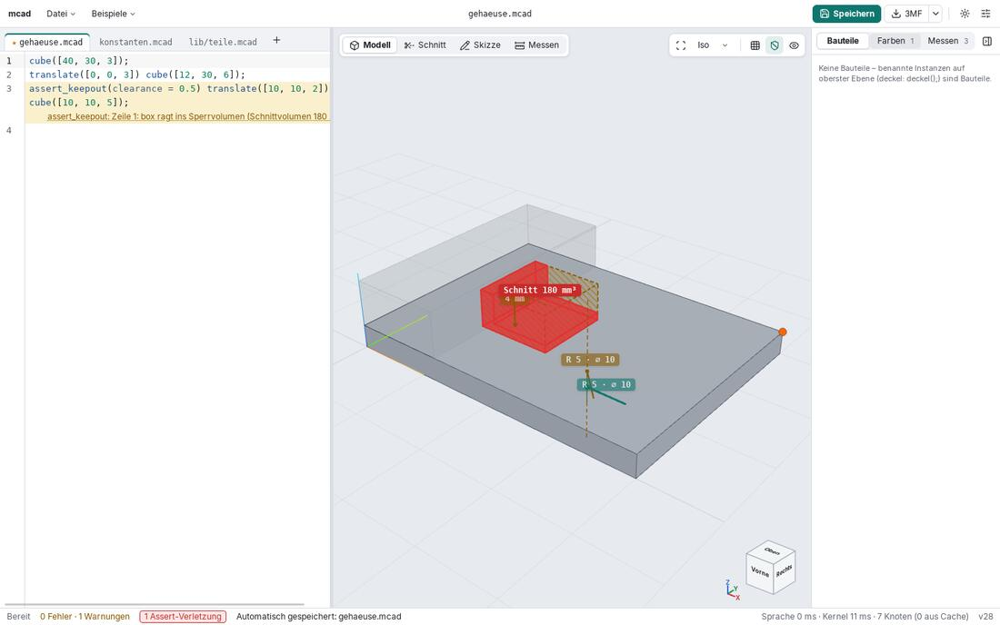
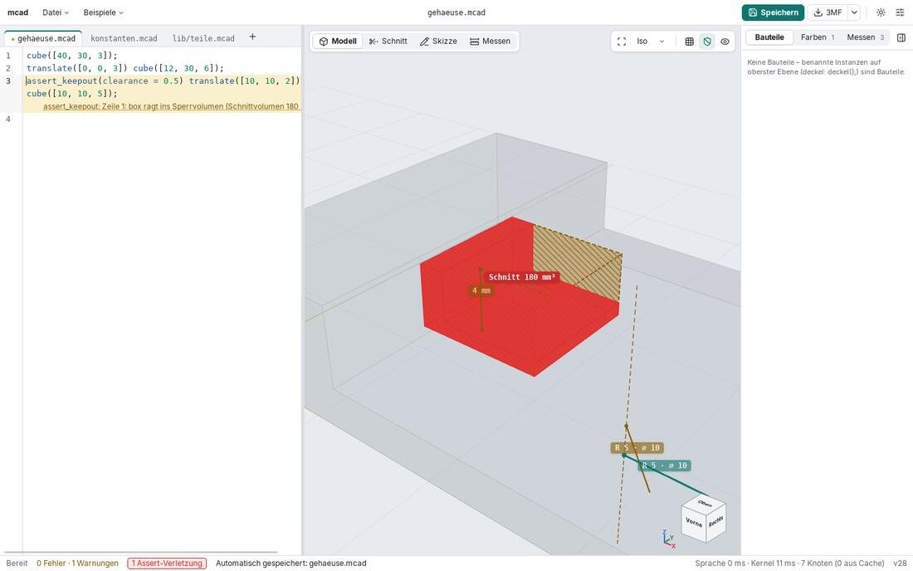
Wasm-Build
emsdk 6.0.13 und wasm-bindgen-cli 0.2.129 ließen sich im Container einrichten (Downloads über den Proxy); smlib.wasm neu gebaut (≈ 5 min, 244 Ziele, mit sc_offset und den Kontaktstellen aus Phase D), cad-wasm ≈ 65 s. Größen nach wasm-opt -O3:
| Datei | vor Phase A (852fbc1) | nach Phase C | jetzt | Δ zu vorher | gzip -9 vorher → jetzt |
|---|---|---|---|---|---|
cad_wasm_bg.wasm | 4.545.057 | 4.887.251 | 4.923.698 | +8,3 % | 1.925.346 → 2.093.609 |
smlib.wasm | 5.283.311 | 5.289.122 | 5.305.410 | +0,4 % | 1.862.076 → 1.874.500 |
Werte vor Phase A und nach Phase C aus dem Material der Phase C (gleiche Werkzeuge, alter Stand als eigener Build); „jetzt“ = web/src/wasm-pkg des finalen Stands.
Grenzen
- Kollision mit Netzen nur ja/nein, ohne Volumen (K6).
- Die Keepout-Prüfung rechnet Booleans im Worker: an einer Lochplatte 120×80 mit 24 Bohrungen und Verrundung ≈ 2,5 s beim ersten Mal (danach aus dem Cache); so lange ist der Worker belegt.
- Punktkontakt (Kugel auf Platte) wird erkannt, aber ohne Ort gemeldet und gezeichnet.
6 Phase D: Nutzer-Feedback
Je Punkt derselbe Aufruf mit dem Release-Build vor Phase D (cad 0.2.1) und dem finalen Stand (mcad 0.3.0); Eingaben als .scad, weil der alte Build .mcad nicht kennt.
| Nr. | Punkt | vorher | nachher |
|---|---|---|---|
| D1 | Kernel-Fehler mit Ort Die Meldung nennt beide Operanden mit Zeile und die Stelle; JSON at und nodes; render und UI markieren die Stelle. | $ cad check dom_rippe.scad dom_rippe.scad:8:13: Warnung (Auswertung): unbekanntes Modul `slot` dom_rippe.scad:1:1: Fehler (Kernel): Vereinigung gescheitert: the result is not a closed solid: the operands touch tangentially or along an edge there (let them overlap a little or keep a gap) dom_rippe.scad: 1 Fehler, 1 Warnungen (Exit 1) $ cad check f09a_absturz_tangentialer_dom.scad f09a_absturz_tangentialer_dom.scad:7:1: Fehler (Kernel): Vereinigung gescheitert: the result is not a closed solid: the operands touch tangentially or along an edge there (let them overlap a little or keep a gap) f09a_absturz_tangentialer_dom.scad: 1 Fehler, 0 Warnungen (Exit 1) $ cad check f08c_differenz_torus_tangential.scad f08c_differenz_torus_tangential.scad:7:1: Fehler (Kernel): Differenz gescheitert: the result is not a closed solid: the operands touch tangentially or along an edge there (let them overlap a little or keep a gap) f08c_differenz_torus_tangential.scad: 1 Fehler, 0 Warnungen (Exit 1) | $ mcad check dom_rippe.scad dom_rippe.scad:1:1: Fehler (Kernel): Vereinigung gescheitert: Zeile 15 (dom) und Zeile 16 (rippe) berühren sich tangential bei [7, 15, 5]: the result is not a closed solid: the operands touch tangentially or along an edge there (let them overlap a little or keep a gap) dom_rippe.scad: 1 Fehler, 0 Warnungen (Exit 1) $ mcad check f09a_absturz_tangentialer_dom.scad f09a_absturz_tangentialer_dom.scad:7:1: Fehler (Kernel): Vereinigung gescheitert: Zeile 9 (box) und Zeile 10 (cylinder) berühren sich tangential bei [2, 10, 6]: the result is not a closed solid: the operands touch tangentially or along an edge there (let them overlap a little or keep a gap) f09a_absturz_tangentialer_dom.scad: 1 Fehler, 0 Warnungen (Exit 1) $ mcad check f08c_differenz_torus_tangential.scad f08c_differenz_torus_tangential.scad:7:1: Fehler (Kernel): Differenz gescheitert: Zeile 8 (cylinder) und Zeile 9 (torus) berühren sich tangential bei [-20, 0, -1] (und 1 weitere Stelle): the result is not a closed solid: the operands touch tangentially or along an edge there (let them overlap a little or keep a gap) f08c_differenz_torus_tangential.scad: 1 Fehler, 0 Warnungen (Exit 1) |
| D2 | -D ohne ModulkontextSetzt Zuweisungen auf oberster Ebene wie openscad -D; unbekannter Name → Warnung. | $ cad measure teil.scad -D w=40 --volume all cad measure: -D braucht einen Modulkontext (--module oder --line in einem Modul) (Exit 2) $ cad check teil.scad -D breite=3 cad check: -D braucht einen Modulkontext (--module oder --line in einem Modul) (Exit 2) | $ mcad measure teil.scad -D w=40 --volume all Volumen all: 6400 mm³ (Exit 0) $ mcad check teil.scad -D breite=3 teil.scad:1:1: Warnung (Auswertung): -D breite: keine Zuweisung `breite` auf oberster Ebene der Hauptdatei (ignoriert) teil.scad: 0 Fehler, 1 Warnungen (Exit 0) |
| D3 | STEP mit getrennten Körpern Ein benannter Körper je Bauteil bzw. Objekt der obersten Ebene; --merge schreibt einen Körper wie früher. | $ cad export pair.scad -o pair.step pair.step: 1 Körper, 6 Flächen, 12 Kanten, 6703 Bytes, Volumen 2000 mm³ (Exit 0) # STEP: 1 MANIFOLD_SOLID_BREP ['pair 1'] | $ mcad export pair.scad -o pair.step pair.step: 2 Körper (a, b), 12 Flächen, 24 Kanten, 11847 Bytes, Volumen 2000 mm³ (Exit 0) # STEP: 2 MANIFOLD_SOLID_BREP ['a', 'b'] |
| D5 | slot(p1, p2, r)Langloch als exakte 2D-Grundform (vorher unbekanntes Modul, Platte ohne Loch). | $ cad measure slot.scad --volume all --section z=2 slot.scad:3:45: Warnung (Auswertung): unbekanntes Modul `slot` slot.scad:3:27: Warnung (Kernel): kein Profil Schnitt z = 2 (entfernt z > 2): 1 Bereich(e), Fläche 800 mm² (exakt: Konturen aus Geraden und Kreisen der B-Rep) Bereich 1: 800 mm², Hülle [0, 0, 2] – [40, 20, 2], 0 Loch/Löcher kleinste Wandstärke ≈ 20 mm von [37.5, 20, 2] bis [37.5, 0, 2] (8 Stellen je Konturabschnitt; genau: --wall P) Volumen all: 3200 mm³ (Exit 0) | $ mcad measure slot.scad --volume all --section z=2 Schnitt z = 2 (entfernt z > 2): 1 Bereich(e), Fläche 651.7257 mm² (exakt: Konturen aus Geraden und Kreisen der B-Rep) Bereich 1: 651.7257 mm², Hülle [0, 0, 2] – [40, 20, 2], 1 Loch/Löcher Bogen R 3 · ⌀ 6 bei [10, 10, 2] (center@[10,10,2]) Bogen R 3 · ⌀ 6 bei [30, 10, 2] (center@[30,10,2]) kleinste Wandstärke ≈ 7 mm von [27.5, 20, 2] bis [27.5, 13, 2] (8 Stellen je Konturabschnitt; genau: --wall P) Volumen all: 2606.9027 mm³ (Exit 0) |
| D7 | -m 'modul(args)'Modulkontext mit Argumenten wie im Code, verschachtelt teile.schraube(d = 3); Fehler mit Exit 2. | $ cad export halter.scad -m 'halter(30, h = 5)' -o halter.stl cad export: kein Ergebnis (Exit 3) $ cad export halter.scad -m 'teile.schraube(d = 3)' -o schraube.stl cad export: kein Ergebnis (Exit 3) $ cad check halter.scad -m 'halter(x = 1)' halter.scad:1:1: Fehler (Auswertung): Modul `halter(x = 1)` nicht gefunden halter.scad: 1 Fehler, 0 Warnungen (Exit 1) | $ mcad export halter.scad -m 'halter(30, h = 5)' -o halter.stl halter.stl: 12 Dreiecke, 684 Bytes, Volumen 750 mm³ (Exit 0) $ mcad export halter.scad -m 'teile.schraube(d = 3)' -o schraube.stl schraube.stl: 188 Dreiecke, 9484 Bytes, Volumen 70.6858 mm³ (Exit 0) $ mcad check halter.scad -m 'halter(x = 1)' mcad check: -m 'halter(x = 1)': Modul `halter` hat keinen Parameter `x` (Parameter: w, h, d) (Exit 2) |
D1 Kernel-Fehler mit Ort
Ist ein Boolean-Ergebnis kein geschlossener Körper, liefert die Fassade (Version 6) die nicht-mannigfaltigen Kanten als Polylinien; die Engine kennt den Knoten je Operand und nennt die berührenden Operanden. JSON-Diagnose mit at (Kontextkoordinaten) und nodes; mcad render markiert jede Stelle (Kanten rot, Punkt, „Berührung Z.15 + 16“), die UI ebenso, ein Klick auf die Meldung rahmt die Stelle ein.
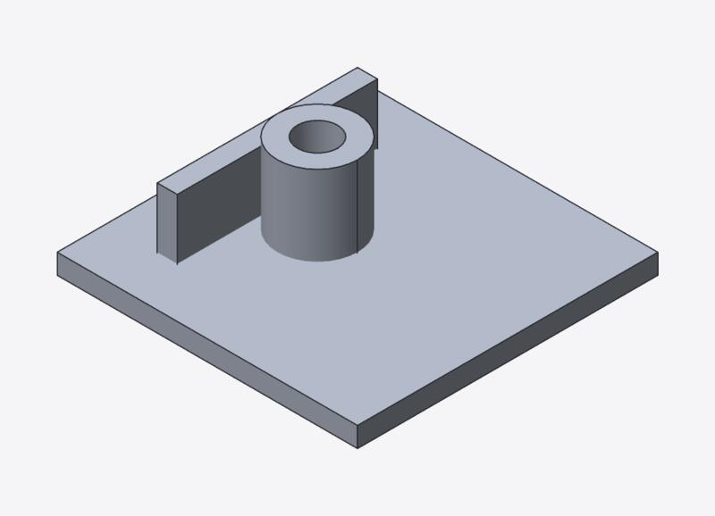
cad render dom_rippe.scad ohne Markierung (und ohne slot)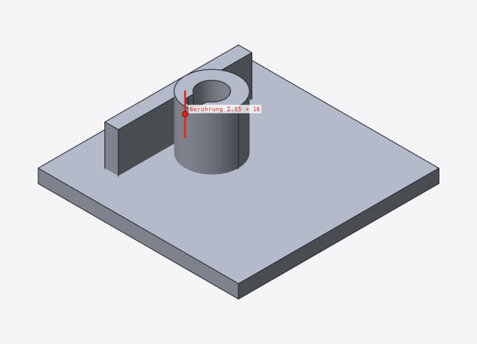
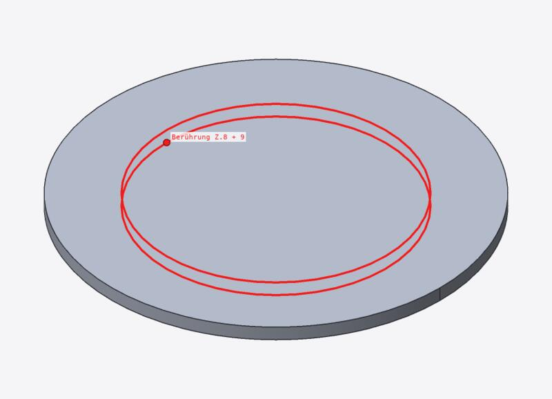
f08c_differenz_torus_tangential: Zylinder − Torus, beide Berührkreise rot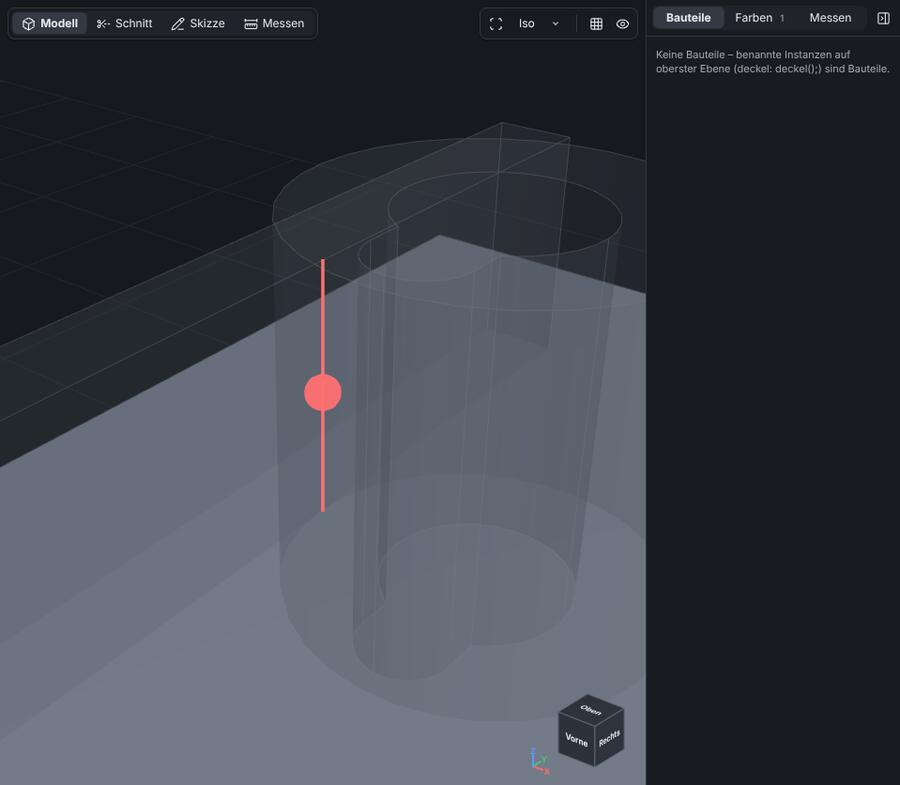
D3 STEP: Körper je Bauteil und Objekt
Standard: ein MANIFOLD_SOLID_BREP je Bauteil (Name des Bauteils) und je Objekt der obersten Ebene außerhalb der Bauteile (Name des Objekts durch Transformationen hindurch); berührende Teile bleiben getrennt (vorher verschmolzen). Überschneiden sich Objekte (Summe der Volumen > Volumen der Vereinigung), steht ein Hinweis im Export. --merge schreibt die Wurzel als einen Körper wie früher. Von 64 Beispielmodellen änderten 12 ihre Körperzahl (Stand 8ac92d6, OCCT gelesen):
| Modell | vorher (--merge) | nachher | Namen nachher |
|---|---|---|---|
openscad-compat/07_crown_ring.scad | 1 | 17 | difference, group 1, group 2, group 3, group 4, group 5, group 6, group 7, group |
openscad-compat/14_pipe_bend.scad | 1 | 3 | rotate_extrude, linear_extrude, linear_extrude 2 |
openscad-compat/25_root_modifier.scad | 1 | 2 | box, cylinder |
openscad-compat/30_each_ranges.scad | 1 | 8 | box, group 1, group 2, group 3, group 4, group 5, group 6, group 7 |
spec/asserts.scad | 1 | 4 | g, hl, kf, k |
spec/gehaeuse.scad | 2 | 3 | k, deckel, deckel 2 |
spec/kabelfuehrung.scad | 2 | 4 | sweep, sweep 2, group 1, group 2 |
spec/knauf_mirror.scad | 2 | 3 | k, knauf, cylinder |
spec/skizze_deckel.scad | 1 | 2 | difference, linear_extrude |
spec/skizze_kabelkanal.scad | 1 | 4 | linear_extrude, linear_extrude 2 1, linear_extrude 2 2, linear_extrude 3 |
spec/text_schild.scad | 1 | 41 | linear_extrude, linear_extrude 2, linear_extrude 3 1, linear_extrude 3 2, linear |
spec/winkel_anker.scad | 3 | 6 | a, b, schraube, schraube 2, schraube 3, box |
Mit Hinweis „Objekte überschneiden sich“ (finaler Lauf verify.py --bodies, Volumen dort nicht verglichen): 07_crown_ring (17 Körper, Summe 2.239,3 mm³ gegen 2.161,0 mm³ der Vereinigung), asserts (4 Körper, Summe 19.968,0 mm³ gegen 19.662,0 mm³ der Vereinigung), kabelfuehrung (4 Körper, Summe 7.755,5 mm³ gegen 7.748,1 mm³ der Vereinigung), knauf_mirror (3 Körper, Summe 15.685,7 mm³ gegen 15.681,7 mm³ der Vereinigung), skizze_kabelkanal (4 Körper, Summe 10.988,2 mm³ gegen 9.898,7 mm³ der Vereinigung), winkel_anker (6 Körper, Summe 8.401,4 mm³ gegen 8.337,8 mm³ der Vereinigung) – siehe Grenzen.
D5 slot(p1, p2, r)
| Aufruf, um 1 extrudiert | mcad | πr² + 2r·|p2 − p1| | rel. Abw. |
|---|---|---|---|
slot([0, 0], [20, 10], 3) | 162,4384 | 162,4384 | +7,7·10⁻⁸ |
slot([-5, 1], [7, 1], 2) | 60,5664 | 60,5664 | +4,9·10⁻⁷ |
slot([5, 5], [5, 5], 2) | 12,5664 | 12,5664 | +2,3·10⁻⁶ |
slot([0, 0], [100, 0], 0.5) | 100,7854 | 100,7854 | +1,8·10⁻⁸ |
Fläche aus der Volumenintegration (Stand 91f8ef6); die Kontur selbst besteht aus zwei Halbkreisen und zwei Geraden (exakte Bögen im Schnitt, siehe Tabelle oben). p1 == p2 ergibt einen Kreis; Punkte auch als Rasterpunkte/Anker, d = … statt r; Griffe für p1, p2 und r.
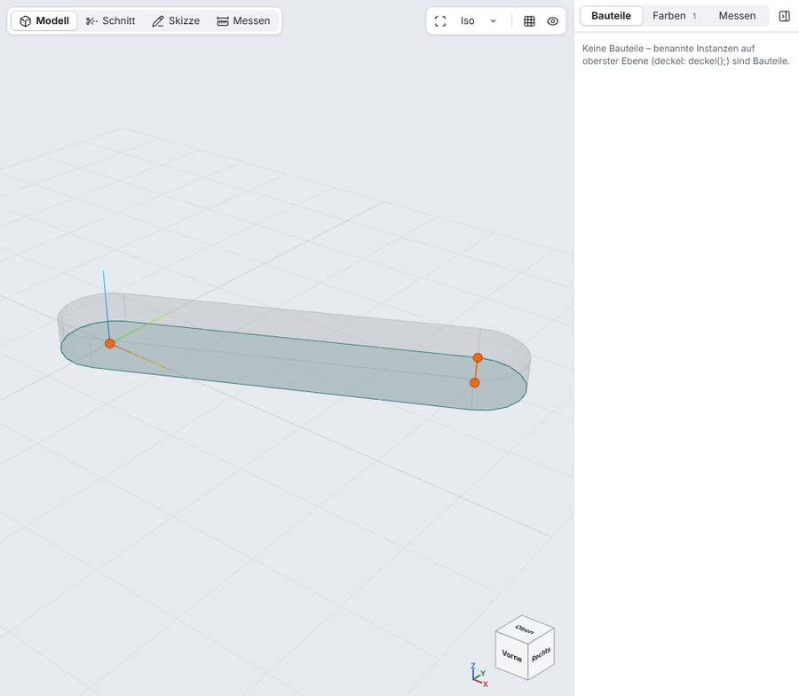
linear_extrude(2) slot(…)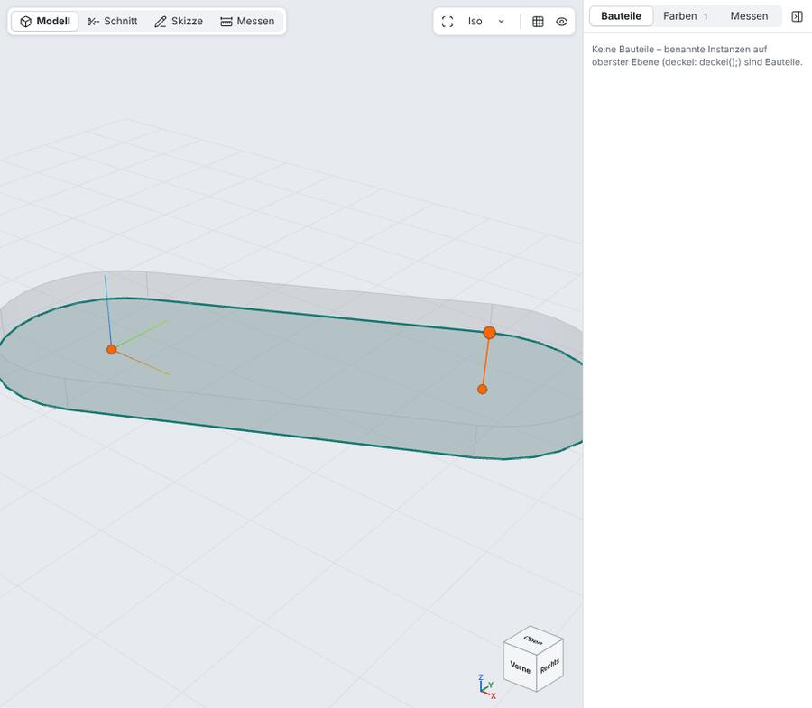
D6 JSON-Schema 2
| vorher | nachher | |
|---|---|---|
mcad inspect fillet_zonen --line 12 --json | schema_version 1, selected_edges: 2 (Zahl) | schema_version 2, selected_edges: Liste von 2 Polylinien mit 36 Punkten (Weltkoordinaten), selected_edge_count: 2 |
outline | Rasterebene axis als Name, Literale/Bauteile uneinheitlich | axis 0|1|2 wie in der Szene (+ axis_name), variables[].literal als Bereich|null, instances[].part als Name|null |
7 Phase E: Umbenennung cad → mcad
Binary, Programmname, Meldungen und Manual heißen mcad (Version 0.3.0); neue Dateien bekommen .mcad, .mcad und .scad öffnen überall (CLI, include/use, Dialoge, Ordner-Projekte, Upload, ZIP, Beispielmenü). Inventar über git grep vor der Umbenennung: 1703 Treffer für -w cad außerhalb der Berichte, 187 .scad-Dateien.
| Bereich | vorher | nachher |
|---|---|---|
| Binary, Meldungen, Manual, Skill | cad, cad check: … | mcad, mcad check: …; Test usage::no_old_program_name |
| Umgebung, Konfiguration, Socket | CAD_*, ~/.config/controller-cad/, $XDG_RUNTIME_DIR/controller-cad | MCAD_* (alte Namen als Rückfall), ~/.config/mcad/ (alte Datei gilt, wenn die neue fehlt), $XDG_RUNTIME_DIR/mcad |
| Desktop-App | productName controller-cad, App-ID dev.controller-cad.desktop | mcad, dev.mcad.desktop, Fenstertitel „… – mcad“; Liste zuletzt geöffneter Dateien einmal übernommen |
| Dateitypen, Paket | Desktop-Datei mit application/x-openscad, Arch-Paket controller-cad | text/x-mcad und application/x-openscad (packaging/linux/mcad.xml), Paket mcad mit replaces=('controller-cad') |
| Beispiele, Testdaten | 94 Dateien *.scad | *.mcad per git mv, Verweise nachgezogen |
| STEP/3MF-Metadaten, Web-Titel | controller-cad, „Parametrisches CAD“ | mcad, „mcad – Parametrisches CAD“ |
| bleibt | Grund |
|---|---|
Crate-Namen cad-*, Skill-Ordner cad-cli | intern; Pfade in Briefs und Werkzeugen |
Repository controller-cad, Docker-Image/Volume der Arch-Bauumgebung | Name des Repositorys und der Bau-Infrastruktur |
IndexedDB-Name controller-cad (Browser) | dort liegen die gespeicherten Projekte der Nutzer |
| Schriftname „cad stencil mono“ | steht in Modellen |
examples/openscad-compat/*.scad, tests/openscad-compat, tests/farben-pruefung, Fallstudie Bericht 8 | werden mit OpenSCAD verglichen bzw. sind Momentaufnahmen; prüfen nebenbei, dass .scad weiter geht |
Berichte docs/reports/** | Momentaufnahmen |
$ mcad --version mcad 0.3.0 $ mcad check teil.mcad teil.mcad: 0 Fehler, 0 Warnungen (Exit 0) $ mcad measure lib/halter.scad -m 'halter(30)' --volume all Volumen all: 300 mm³ (Exit 0)
Tauri T20 bestanden: Datei alt.scad; keine Diagnosen ([]); Projektdateien ["alt.scad","lib/teil.mcad"]; Kopfleiste „mcad“; Fenstertitel „alt.scad – mcad“; WM_CLASS dev.mcad.desktop/Dev.mcad.desktop.
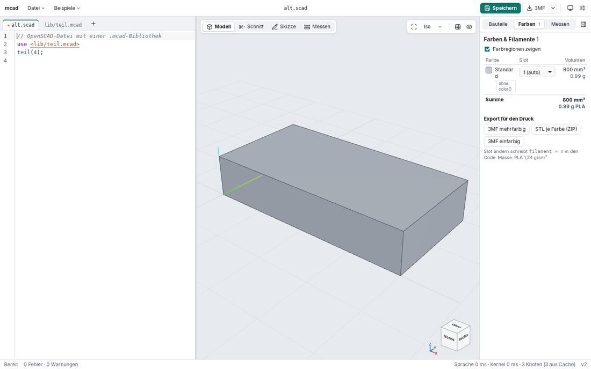
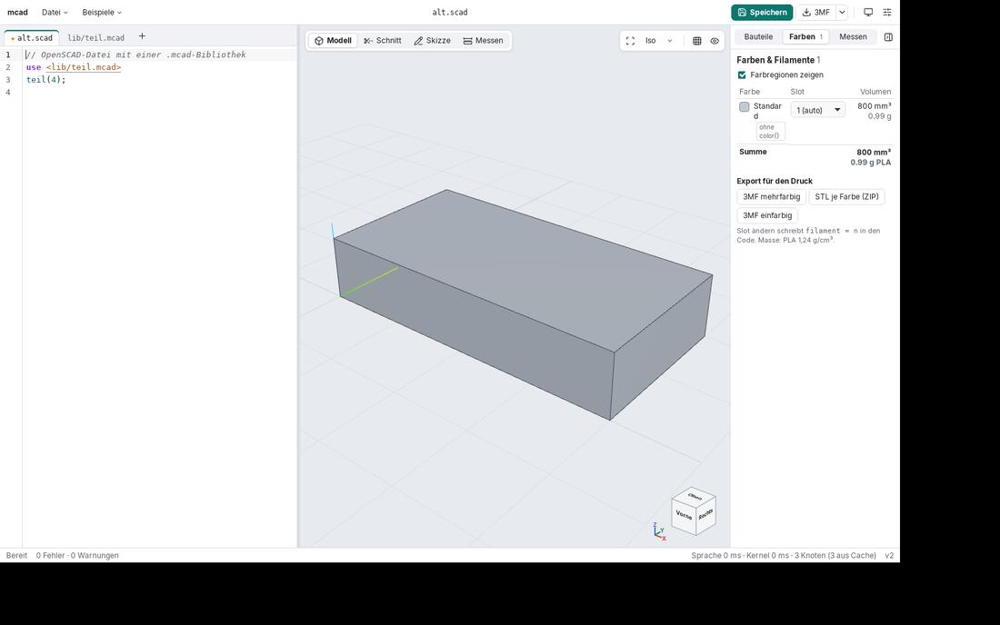
8 Testläufe am finalen Stand
| Befehl | Ergebnis | Dauer |
|---|---|---|
cargo fmt --all --check | sauber | 2 s |
cargo test --workspace --no-fail-fast (mit Tauri/WebKitGTK, CARGO_INCREMENTAL=0) | 658 bestanden, 0 fehlgeschlagen, 0 ignoriert (106 Test-Binaries) | 6,4 min |
cargo clippy --workspace --all-targets -- -D warnings und -p cad-wasm --target wasm32-unknown-unknown | sauber | 40 s + 19 s |
cargo check -p kernel-solidcore --features solidcore | ok | 3 s |
cd web && pnpm test (Vitest) | 246 bestanden, 0 fehlgeschlagen | 3 s |
pnpm typecheck | sauber | 3 s |
pnpm e2e (Playwright 1.56.1, Chromium mit SwiftShader, ganze Suite, JSON-Reporter) | 149 bestanden, 0 fehlgeschlagen (17 Dateien) | 20,5 min |
node web/e2e-tauri/desktop.e2e.mjs --bin target/release/mcad (tauri-driver, Xvfb) | 20 / 20 bestanden | 74 s |
MCAD=target/release/mcad python3 tests/openscad-compat/compare.py --eval | 36 / 36 | 18 s |
tests/step/verify.py (OCCT, cadquery-ocp 8.0.1.1, --merge gegen die Wurzel) | 64 / 64 | 1,8 min |
tests/step/verify.py --bodies (neuer Standard: Körper je Bauteil/Objekt) | 64 / 64 | 86 s |
tests/alltag/check.sh -j 4 (Alltagsmodelle: check, Bauteile, Export) | 19 Modelle, 0 mit Problemen, 97 s, Exporte in /tmp/alltag-sbggskb9 (gelöscht) | 1,6 min |
Gefunden und behoben: tests/step/verify.py brach am finalen Stand mit SyntaxError: unmatched ')' ab, bevor es eine Datei prüfte – beim Umstellen des Standardwerts von --cad auf MCAD (Commit 4db585b) war eine Klammer zu viel stehen geblieben. Behoben in 0ea0d78; danach 64/64 in beiden Arten. Sonst waren alle Läufe im ersten Durchgang grün; nichts übersprungen oder deaktiviert.
Alle Läufe nacheinander auf demselben Rechner (4 Kerne), Protokolle in reports/tmp/report21/final/. Neu in den Phasen: Playwright C01, C02, C03, C04, C05, C06, C07, D01, D02, B12; Tauri T19, T20.
Tauri-E2E
| Nr. | Szenario | Ergebnis | Dauer |
|---|---|---|---|
| T01 | App startet mit Datei, Szene erscheint (nativer Kernel) | bestanden | 2,9 s |
| T02 | Externe Änderung ohne ungespeicherte Änderungen: still neu geladen, Undo als eigener Schritt | bestanden | 0,9 s |
| T03 | Git-Markierungen am Rand (neu, geändert, gelöscht) | bestanden | 1,1 s |
| T04 | Externe Änderung bei ungespeicherten Änderungen: Hinweisleiste, Vergleichen, Meine behalten, Speichern ohne Schleife | bestanden | 2,8 s |
| T05 | Gelöschte und umbenannte Datei | bestanden | 1,4 s |
| T06 | Agent-Ablauf: Datei per Shell ändern, `mcad check`, UI folgt (Bildfolge) | bestanden | 1,2 s |
| T07 | `mcad ui status` / `show` / `screenshot` gegen die laufende App | bestanden | 1,1 s |
| T08 | Schnittansicht in Tauri (Kappe, Kontur, Ziehen, CLI-Aufruf) | bestanden | 6,3 s |
| T09 | Watchdog in Tauri: hängender Kernel → Engine-Prozess ersetzt, Knoten gesperrt | bestanden | 7,7 s |
| T10 | Ordner als Projekt, Autospeichern | bestanden | 3,8 s |
| T11 | Tastendruck → Szene nativ (Messung) | bestanden | 14,1 s |
| T12 | Farben & Filamente in Tauri: Liste, Slot ändern, 3MF mehrfarbig (nativer Kernel) | bestanden | 3,6 s |
| T13 | Dunkles Thema in Tauri: Kontrast (computed styles), Ansicht, Editor | bestanden | 0,8 s |
| T15 | Bericht 12 in Tauri: Farbregionen je Instanz, filament()-Tabelle, Objekt „ohne Bauteil“, 3MF ohne Farbgruppe | bestanden | 0,9 s |
| T16 | Skizzen-Editor in Tauri: Zeichenmodus, Rechteck auf Rasterpunkten, Snap-Anzeige, Undo (TauriTransport, nativer Kernel) | bestanden | 2,2 s |
| T17 | Messen in Tauri: Radius, Abstand paralleler Flächen, Radius im Schnitt (TauriTransport, nativer Kernel) | bestanden | 2,6 s |
| T18 | UI-Überarbeitung in Tauri: Leisten ohne Umbruch bei 1280/1440/1920 (hell/dunkel), Menüs, Ansichtswürfel, Seitenpanel | bestanden | 10,6 s |
| T19 | Asserts in Tauri: Sperrvolumen, Verletzung einrahmen, Export-Rückfrage (nativer Kernel) | bestanden | 1,5 s |
| T14 | Thema „System“ in Tauri folgt dem GTK-Farbschema (prefers-color-scheme) | bestanden | 4,5 s |
| T20 | Umbenennung mcad: Fenstertitel, App-ID (WM_CLASS), Kopfleiste; .scad öffnet mit use <….mcad> | bestanden | 2,9 s |
9 Grenzen und offene Punkte
| Punkt | Ursache bzw. Stand |
|---|---|
Offset/minkowski mit Kugel an nicht rechtwinkligen Ecken | SMLib nähert die Eckkugeln mit Trimmkurven bis 0,33 mm neben den Kanten an (Tetraeder) oder scheitert (Keil); die Fassade lehnt ab → Warnung, Kinder unverändert. |
| Gleich große Kugeln mit Mittelpunkten in einer Ebene | kein Sonderfall (flache Hülle der Mittelpunkte); Warnung. |
| Kollision mit STL-Netzen | nur ja/nein, kein Schnittvolumen. |
| Keepout-Prüfung im Worker | Booleans mit verrundeten Körpern blockieren den Worker beim ersten Mal einige Sekunden (Lochplatte ≈ 2,5 s); danach Cache. |
| Punktkontakt | erkannt, aber ohne Ort (keine Markierung). |
| STEP: überlappende Objekte der obersten Ebene | werden als überlappende Einzelkörper geschrieben (Hinweis im Export). Entscheidung des Nutzers steht aus; Vorschlag: überlappende Objekte zu einem Körper vereinigen, berührende getrennt lassen. |
| STL-B-Rep über 500 Flächen | Booleans überlinear (Kurve in Abschnitt 3); Grenze automatisch, mit as = "solid" erzwingbar. |
| UI-Einstellungen der Desktop-App | Einstellungen und Thema liegen im localStorage der WebView, den Tauri unter der App-ID ablegt; mit dev.mcad.desktop beginnen sie neu. Übernommen wird nur die Liste zuletzt geöffneter Dateien. |
Arch-Paket mcad | PKGBUILD, docker.sh und smoke-test.sh nachgezogen, aber ungebaut: im Container kein makepkg und kein laufender Docker-Daemon. |
compare.py --self-test | braucht Referenz-STLs von OpenSCAD, die hier fehlen; geprüft ist --eval. |